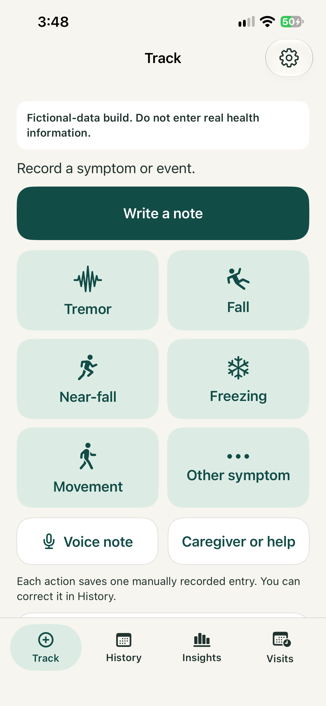
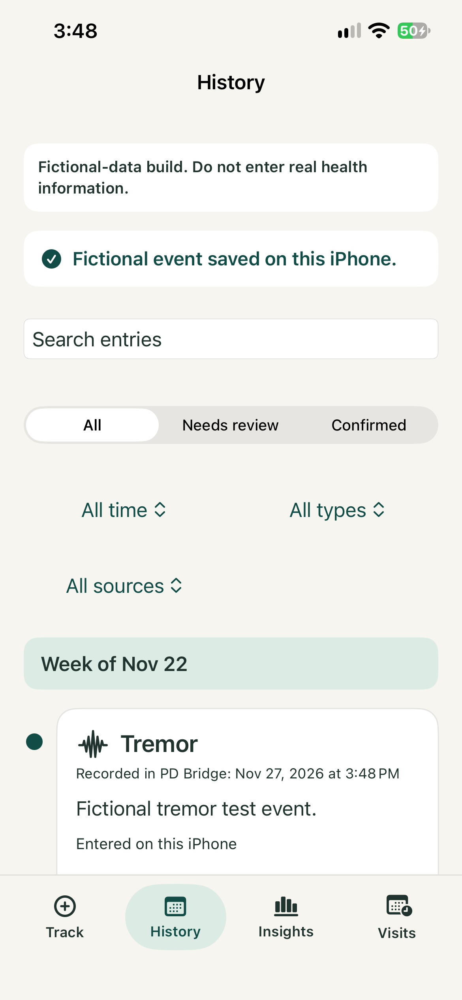
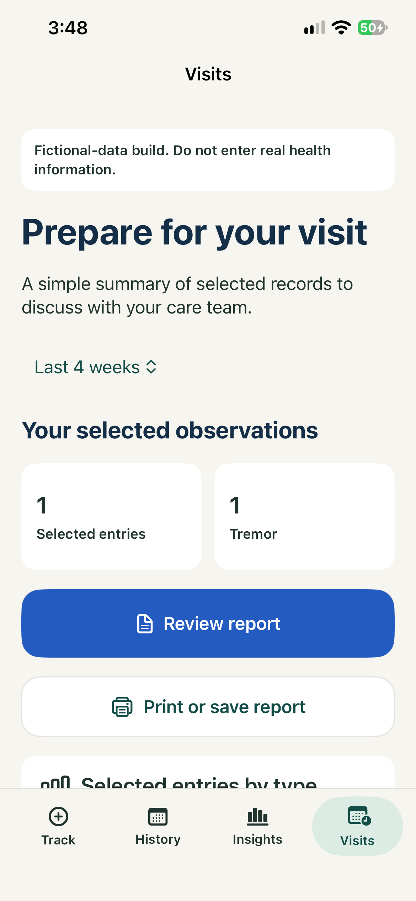

01
Record an observation
Write a note or manually log a tremor, freezing, fall, near-fall, movement, or another observation. Voice recording is optional and starts only when you choose it.
A private iPhone journal · in pre-release testing
PD Bridge helps people living with Parkinson’s record observations in their own words, find them later, and prepare a factual summary to discuss with a care professional.
You choose what to record and include. The app does not interpret symptoms or recommend care.
PD Bridge is not yet available on the App Store or TestFlight. It does not provide diagnosis, treatment advice, automatic fall detection, or emergency monitoring.

How it works
A short path from something you noticed to a report you can review before an appointment.
Write a note or manually log a tremor, freezing, fall, near-fall, movement, or another observation. Voice recording is optional and starts only when you choose it.
History lets you search, edit, or delete entries. When wording is corrected, the original remains available for review.

Select relevant entries and leave others out. Preview a factual report, then choose whether to print or save it as a PDF.

Built for everyday use
These features are in the current native build. Release testing remains in progress.
Notes, optional local voice recordings, and manually logged events. You choose when to record.
Weekly and monthly counts summarize recorded entries. A quiet day without an entry is unknown, not symptom-free.
Choose entries for a report with source and timing context. PD Bridge does not diagnose or score progression.
Large actions, Comfort Mode, Dynamic Type, dark appearance, and VoiceOver labels are built in. Accessibility review continues.
An optional generic reminder can be scheduled on the iPhone. Delivery depends on iOS permission and system state.
Enter a contact and review it before choosing whether to open Phone. The app does not call, message, or share location automatically.


The app preserves Unicode text as entered. Draft translated interface resources still need fluent review; complete multilingual support is not claimed.
Privacy and ownership
Saved observations and voice notes are encrypted locally. PD Bridge has no account, hosted diary, advertising SDK, cloud analysis, or automatic upload of observations.
The encryption key stays in the device-only Keychain. Local vault files are excluded from iPhone and iCloud device backups. You can make a passphrase-encrypted export and choose its destination; exported copies are outside the app’s control.
Delete individual entries in History or delete the local diary in Settings. Local deletion does not remove exports saved elsewhere or guarantee physical overwriting of flash storage.
Read the Privacy PolicyAvailability
PD Bridge has been installed and launched on a physical iPhone 14. One focused fictional-data appointment workflow passed on that device. Broader current-build physical testing, distribution signing, and Apple organization enrollment remain open.
There is no App Store or TestFlight download link yet. To ask about availability, email tanvipunjani.dev@gmail.com. Please do not send health information.
This product has not undergone clinical validation. If you need urgent assistance, contact local emergency services directly.
For collaborators
The current iPhone app is native SwiftUI. A local encrypted vault supports the journal and selected-entry report. Full release QA and independent security review remain open.
A focused iPhone 14 UI test saved a fictional entry, selected it for an appointment, relaunched, and checked the report preview. That isolated test did not verify the ordinary vault while locked.
Capture is optional; corrections retain original wording; a person selects report entries. The manual caregiver flow avoids an unreliable system picker.
Automatic detection, prediction, AI advice, medication recommendations, and emergency monitoring are not part of the consumer build. They need separate evidence and review.
For technical or partnership inquiries, email tanvipunjani.dev@gmail.com. Do not include confidential or medical information in the first message.